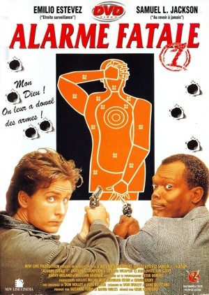
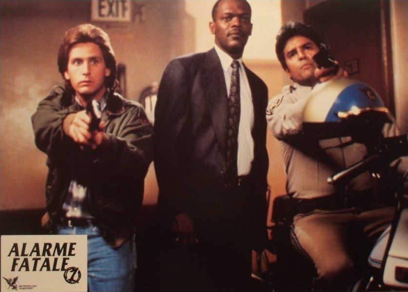

J'avais onze ans.
Un jour, mon grand-père m'a montré une cassette qu'il venait d'enregistrer sur Canal+. Sur l'étiquette, un titre : Alarme fatale.
J'ai tout de suite pensé à L'Arme fatale. Riggs, Murtaugh, les fusillades, les répliques. Et j'ai compris immédiatement : ce film-là devait se moquer de l'autre. J'avais vu juste.
En glissant la cassette dans le magnétoscope, j'ai découvert bien plus qu'une parodie. L'Arme fatale 1, 2 et 3, bien sûr, mais aussi Basic Instinct, Rambo II, Chips, Piège de cristal, Les Tortues Ninja, Le Silence des agneaux… Chaque scène cachait un clin d'œil, chaque gag renvoyait à un film que je connaissais, ou que je découvrirais plus tard. C'était comme feuilleter un catalogue de vidéoclub en accéléré.
Ce film est resté gravé dans ma mémoire pour toutes ces références. Certains vous diront de passer votre chemin. Moi, je vous dirai d'y jeter quand même un œil.
Ce soir, on charge l'arme. Elle est chargée à blanc.

Alarme fatale — « Mon Dieu ! On leur a donné des armes ! »
Alarme fatale.
Le titre original est National Lampoon's Loaded Weapon 1. Le film est réalisé par Gene Quintano, produit par New Line Cinema sous la marque National Lampoon, célèbre pour ses comédies potaches, et sort aux États-Unis en février 1993.
Le casting est une affiche à lui seul : Emilio Estevez et Samuel L. Jackson en duo de flics, William Shatner en méchant, Tim Curry, Jon Lovitz, Kathy Ireland, et une avalanche d'apparitions surprises, de Whoopi Goldberg à Charlie Sheen, en passant par Bruce Willis et les deux motards de Chips.
L'histoire reprend la trame de L'Arme fatale. Jack Colt est un flic suicidaire et incontrôlable, Wes Luger un vétéran à quelques jours de la retraite. Ensemble, ils enquêtent sur un trafic de drogue dissimulé… dans des biscuits vendus par des scouts.
Mais l'intrigue n'est qu'un prétexte. Alarme fatale est une parodie à la manière de Y a-t-il un flic pour sauver la reine ? : chaque scène détourne un film culte du moment, de L'Arme fatale à Basic Instinct, du Silence des agneaux à Rambo II.
Le « 1 » du titre promettait une saga. Il n'y aura jamais de deuxième épisode.
Au début des années 90, la parodie est à la mode. Y a-t-il un flic pour sauver la reine ? triomphe en 1988, sa suite en 1991, et la même année Hot Shots ! détourne Top Gun avec Charlie Sheen. Hollywood a trouvé une formule qui marche : prendre les grands succès du moment et les tourner en dérision, un gag par seconde.
New Line Cinema veut sa part du gâteau. Le studio s'associe à National Lampoon, la marque du magazine d'humour américain, déjà associée à American College et aux Bonnes Vacances avec Chevy Chase. La cible est toute trouvée : L'Arme fatale, la saga policière la plus populaire de l'époque, dont le troisième volet vient de sortir.
La réalisation est confiée à Gene Quintano, scénariste de deux Police Academy. Il connaît la comédie potache et les films de flics, et il construit le scénario comme une compilation de références, en piochant dans tous les succès récents du cinéma d'action et du thriller.
Pour le duo, la production réunit Emilio Estevez, star de Young Guns, et Samuel L. Jackson, qui n'est pas encore une vedette. Pulp Fiction n'arrivera que l'année suivante, et ce rôle de flic à la veille de la retraite est l'un de ses premiers grands rôles comiques.
Autour d'eux, le film multiplie les apparitions. William Shatner, le capitaine Kirk de Star Trek, joue le méchant. Charlie Sheen, le frère d'Emilio Estevez, fait un passage éclair, tout comme Bruce Willis, Whoopi Goldberg, ou encore Erik Estrada et Larry Wilcox, les deux motards de Chips. Chaque caméo est un clin d'œil de plus pour le spectateur.
Le tournage est rapide et le budget modeste. Alarme fatale sort aux États-Unis en février 1993, puis en France la même année. Un an plus tard, comme l'a vécu un garçon de onze ans, il passe sur Canal+ et finit sur une cassette enregistrée par un grand-père.

Colt, Luger… et un motard de Chips
Los Angeles, début des années 90.
Le sergent Wes Luger n'a plus que quelques jours à tirer avant la retraite. Il rêve de tranquillité, de sa famille et de son jardin. Mais quand une vieille amie et ancienne coéquipière est assassinée chez elle, il n'a pas le choix : il doit reprendre du service une dernière fois.
On lui impose un nouveau partenaire, Jack Colt. Un flic instable et suicidaire, qui vit dans une caravane avec son chien, fume comme un pompier et tire sur tout ce qui bouge. Luger le trouve fou. Colt trouve Luger trop vieux. Ils vont devoir travailler ensemble.
Leur enquête les mène vers un étrange trafic : un réseau de drogue qui cache sa marchandise dans des biscuits, vendus de porte à porte par une troupe de jeunes scoutes. À la tête de l'organisation, le général Mortars, ancien militaire mégalomane, et son homme de main, Mr. Jigsaw.
Sur leur route, Colt et Luger croisent une mystérieuse blonde au fort pouvoir de séduction, un tueur en série enfermé dans une cellule de haute sécurité, et toute une galerie de personnages qui semblent sortis d'autres films.
Car dans Alarme fatale, rien n'est jamais vraiment sérieux. Chaque poursuite, chaque fusillade, chaque interrogatoire est un clin d'œil à un film que vous avez déjà vu.
Deux flics que tout oppose, une enquête absurde, et un festival de références à chaque coin de rue.
Alarme fatale fonctionne comme un grand jeu de piste. L'intrigue compte peu. Ce qui compte, c'est de reconnaître, scène après scène, le film qui se cache derrière chaque gag.
L'Arme fatale sert de colonne vertébrale. Tout y est, mais déformé : le flic suicidaire qui vit dans une caravane avec son chien, le vétéran à quelques jours de la retraite, la famille envahissante, les explosions démesurées et les répliques viriles. Le film reprend même la célèbre phrase de Murtaugh, « Je suis trop vieux pour ces conneries », et la répète jusqu'à l'absurde.
Autour, les parodies s'enchaînent. L'interrogatoire de Basic Instinct est rejoué avec Kathy Ireland dans le rôle de la suspecte fatale. Le Silence des agneaux est revisité avec F. Murray Abraham en psychiatre cannibale. Les références à Rambo II, Piège de cristal, Chips ou Wayne's World surgissent au détour d'un plan. Pour un spectateur de l'époque, c'est un festival : chaque scène réveille le souvenir d'un film vu au cinéma ou loué au vidéoclub.
Le duo Estevez-Jackson est la vraie bonne surprise. Emilio Estevez joue son flic illuminé avec un sérieux imperturbable. Samuel L. Jackson, en vétéran exaspéré, apporte un rythme comique impeccable. On sent déjà chez lui l'aisance qui fera sa légende quelques années plus tard.
Le film a pourtant ses limites. Il n'a ni la folie ni l'inventivité des Y a-t-il un flic, et son humour, très potache, frappe une fois sur deux. Certains gags tombent à plat, et l'ensemble ressemble parfois davantage à une suite de sketches qu'à un vrai film.
Surtout, la parodie dépend de ses modèles. Alarme fatale a été conçu pour un public qui venait de voir Basic Instinct et Le Silence des agneaux. Sans ces références en tête, une partie de l'humour s'évapore.
Mais c'est aussi ce qui en fait un formidable témoignage. Alarme fatale est une photographie du cinéma populaire du début des années 90, de ses héros, de ses tics et de ses succès. Le regarder, c'est feuilleter l'album du vidéoclub de cette époque.

Planque en voiture : Colt, Destiny, le chien et Luger
Alarme fatale a été victime de sa propre nature : une parodie vit et meurt avec les films qu'elle imite.
D'abord, il est arrivé dans l'ombre des maîtres du genre. La trilogie Y a-t-il un flic pour sauver… et Hot Shots ! avaient placé la barre très haut. À côté de ces mécaniques millimétrées, Alarme fatale paraissait plus brouillon, moins inventif. La critique l'a jugé sévèrement, et le public n'y a vu qu'une parodie de plus.
Ensuite, sa cible était difficile à moquer. L'Arme fatale était déjà une saga pleine d'humour, où Riggs et Murtaugh se chamaillaient sans cesse. Parodier un film qui riait déjà de lui-même laissait peu de marge.
Le succès en salles est resté modeste. Le « 1 » du titre, qui annonçait une série de films, est devenu une blague involontaire : il n'y a jamais eu de suite. Sans saga pour entretenir son souvenir, le film s'est effacé.
Il y a aussi le temps. Une parodie repose sur l'actualité du cinéma. En 1993, tout le monde avait vu Basic Instinct et Le Silence des agneaux. Quelques années plus tard, les nouvelles générations découvraient le film sans en connaître les modèles, et une partie des gags perdait son sens. Puis la vague Scary Movie a imposé, à la fin des années 90, un nouveau style de parodie qui a relégué les précédentes au second plan.
Enfin, la carrière de ses acteurs a changé le regard sur le film. Samuel L. Jackson est devenu une immense star grâce à Pulp Fiction, et Alarme fatale est devenu une simple curiosité dans sa filmographie.
Il est resté là où beaucoup l'ont découvert : sur une cassette enregistrée un soir sur Canal+, rangée entre deux films d'action qu'il parodiait.
Parce que c'est un voyage express dans le cinéma du début des années 90, et un jeu dont on ne se lasse pas.
Revoir Alarme fatale, c'est jouer à reconnaître les références. L'Arme fatale, Basic Instinct, Le Silence des agneaux, Rambo II, Piège de cristal, Chips, Wayne's World… À chaque visionnage, on repère un clin d'œil qui nous avait échappé. Pour ceux qui ont grandi avec ces films, c'est un plaisir rare.
Parce que le casting est une curiosité à lui seul. Samuel L. Jackson juste avant Pulp Fiction, Emilio Estevez en pleine gloire, William Shatner en méchant, et une avalanche de caméos inattendus, de Bruce Willis à Whoopi Goldberg. On ne réunirait plus une telle affiche pour une comédie de ce genre aujourd'hui.
Parce que c'est un film qui ne se prend jamais au sérieux. Il ne cherche ni la profondeur ni l'élégance : il veut faire rire, vite, et souvent. Certains gags tombent à plat, d'autres font mouche, mais l'ensemble garde une bonne humeur communicative.
Parce que c'est aussi une manière de revisiter les films qu'il parodie. En riant de leurs clichés, il rappelle à quel point ils ont marqué leur époque, et donne envie de les revoir.
Et parce que certains films ne se jugent pas à leur réputation. Les critiques vous diront peut-être de passer votre chemin. Moi, je vous dirai d'y jeter quand même un œil. Avec un peu de nostalgie et beaucoup d'indulgence, Alarme fatale reste une soirée réjouissante.
Certains films ne sont pas des chefs-d'œuvre. Ils sont des souvenirs.
Alarme fatale, pour moi, c'est une cassette que mon grand-père venait d'enregistrer sur Canal+. J'avais onze ans. En lisant le titre, j'ai tout de suite compris de quoi il allait se moquer. J'avais vu juste, mais je n'imaginais pas jusqu'où il irait. L'Arme fatale, Basic Instinct, Rambo II, Chips, Piège de cristal, Les Tortues Ninja, Le Silence des agneaux : à chaque scène, un film que je connaissais, ou que j'allais bientôt découvrir.
C'était peut-être la première fois que je comprenais que les films se parlaient entre eux. Qu'un gag pouvait renvoyer à une scène culte, qu'une réplique pouvait en cacher une autre. Sans le savoir, Alarme fatale m'apprenait à regarder le cinéma autrement.
Trente ans plus tard, le film n'a pas changé. Il reste potache, inégal, parfois maladroit. Mais il garde ce que j'y ai trouvé la première fois : un catalogue de vidéoclub en accéléré, et le plaisir de reconnaître chaque référence.
Certains vous diront de passer votre chemin. Moi, je vous dirai d'y jeter quand même un œil.
La cassette est dans le lecteur. On rembobine.
Titre original
National Lampoon's Loaded Weapon 1
Pays
États-Unis
Genre
Comédie · Parodie
Durée
84 min
Producteur
New Line Cinema · National Lampoon
Avec aussi
William Shatner · Tim Curry · Kathy Ireland
Parodie de
L'Arme fatale, Basic Instinct, Le Silence des agneaux…
Note
La cassette enregistrée par mon grand-père
SOMEDAY — S3 EP. 03